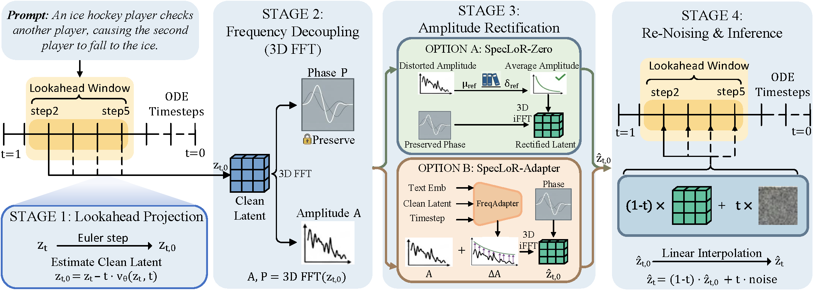

Flow Matching has enabled robust text-to-video generation via latent ODE sampling. However, velocity approximation and numerical discretization errors inevitably accumulate, causing sampling trajectories to drift. Consequently, generated videos often suffer from severe spatiotemporal inconsistencies, such as physically implausible motions. Yet, directly correcting these drifted noisy latents is challenging: timestep-dependent noise obscures reliable structural cues, and spatial interventions risk disrupting fragile local geometry while incurring heavy computational costs. To address this, we propose Spectral Lookahead Rectification (SpecLoR), a plug-and-play inference method that bypasses noise via lookahead prediction. It also circumvents spatiotemporal entanglement by shifting corrections to the frequency domain, where universal statistical natural-video priors are readily available. First, during early sampling stages, SpecLoR looks ahead to estimate the clean latent $z_{t,0}$ and computes its 3D spatiotemporal spectrum. Next, SpecLoR rectifies only the amplitude to match the statistical prior, leaving the phase intact. Finally, the corrected state is re-noised to resume ODE integration. Experiments on Wan2.2 demonstrate that SpecLoR significantly reduces physical artifacts and enhances motion coherence across multiple benchmarks with minimal computational overhead (4 additional NFEs in a 40-step schedule).
Select a category and a specific prompt to see how SpecLoR rectifies video motion coherence.
SpecLoR works entirely during inference-time sampling. Click on each stage below to explore its mechanism.
Diagnosing trajectory drift directly within the intermediate noisy latent space $z_t$ is intractable due to the dominance of timestep-dependent noise. To bypass this, we utilize the current predicted vector field $v_\theta(z_t, t)$ to project the state into a noise-free space via a single Euler step:
$$z_{t,0} = z_t - t \cdot v_\theta(z_t, t)$$This lookahead prediction $z_{t,0}$ acts as a diagnostic window, revealing early structural ambiguities before they solidify into physical artifacts.
Directly modifying the spatial representation of $z_{t,0}$ is challenging because global motion structures and fine geometric details are tightly coupled. We overcome this by shifting intervention to the frequency domain via a 3D Fast Fourier Transform (FFT) across $(T, H, W)$.
This transformation explicitly decouples the macroscopic energy (Amplitude $\mathcal{A}$), which is susceptible to trajectory drift yet safe to rectify, from the highly vulnerable, geometry-encoding Phase $\mathcal{P}$.
We rectify only the corrupted amplitude spectrum while keeping the delicate phase strictly locked. We propose two variants:
We recombine the rectified amplitude $\mathcal{A}_{rect}$ with the preserved phase $\mathcal{P}$, applying a 3D Inverse FFT to yield a purified clean anchor $\hat{z}_{t,0}$.
Finally, we integrate this corrected state back into the ODE solver by re-noising $\hat{z}_{t,0}$ to the current timestep $t$ using noise $\epsilon$:
$$\hat{z}_t = (1 - t) \cdot \hat{z}_{t,0} + t \cdot \epsilon$$This provides a structurally sound anchor for the subsequent flow matching trajectory.

The noisy latent is projected to a clean lookahead state, transformed via 3D FFT, rectified in the amplitude domain, and re-noised back to resume ODE integration.
@article{zhang2026speclor,
author = {Xu Zhang and Yu Lu and Ruijie Quan and Zhaozheng Chen and Bohan Wang and Yi Yang},
title = {SpecLoR: Spectral Lookahead Rectification for Motion-Coherent Text-to-Video Generation},
journal = {arXiv preprint arXiv:2606.11969},
year = {2026},
}